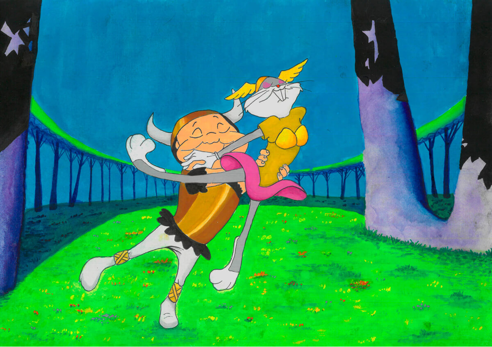
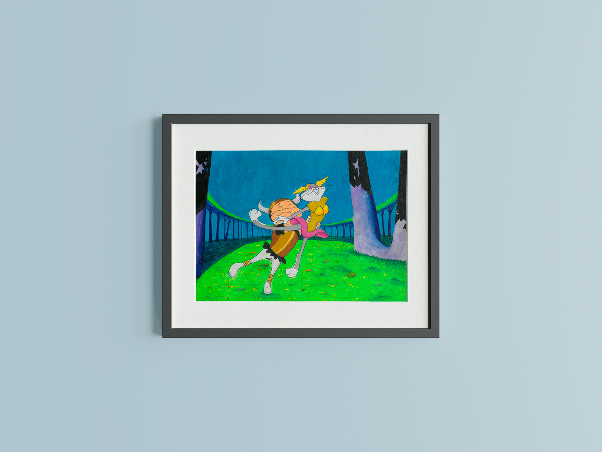
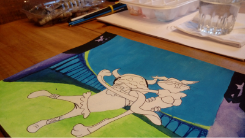

What's Opera, Doc?
This is a recreation of a shot from Warner Brothers Looney Tunes 1957 short film, "What's Opera, Doc?".
I love Looney Tunes. I have books about Chuck Jones and Maurice Noble, DVD collections of the animated shorts, I have Bugs Bunny, Marvin the Martian and K-9 decorating different parts of my house. I mean, I really love it. And of all Looney Tunes masterpieces out there, "What's Opera, Doc?" might the greatest one. So, for my first Looney Tunes themed watercolor painting, I had to start with this one. Hope to do more in the future!
July, 2024


Reference
Right there is the original frame I used as reference. And below you can see a picture I took with finished background but before I started painting the characters.
